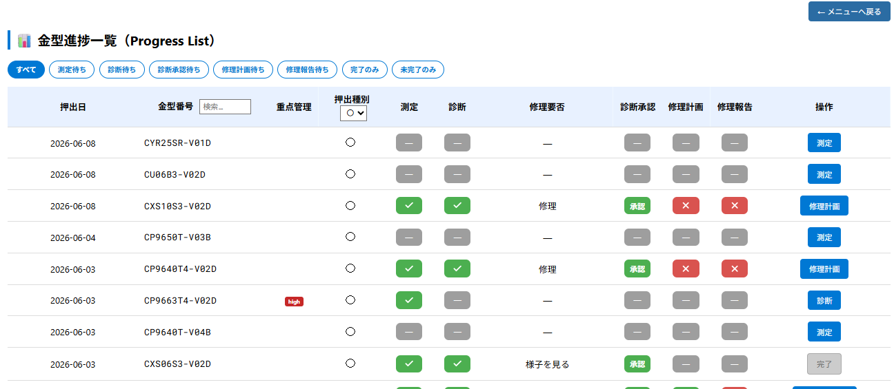
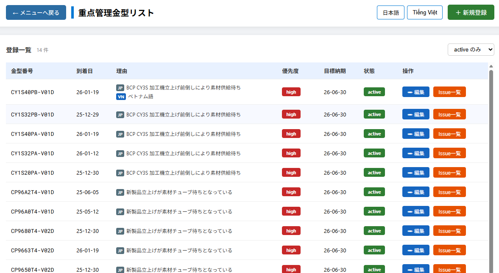

作成日：2026年6月
アルミ押出工場では、多数の押出金型を継続的にメンテナンスしながら使用している。
これまで金型の状態管理や修理履歴は紙・Excelによる運用が中心であり、以下の課題があった。
これらの課題を解決するため、ブラウザで操作できるWebシステムとして本システムを開発、5月中より試験運用している。
PHPとHTML/JavaScriptで構築されており、工場内のPCからブラウザでアクセスして使用する。
本システムの中核機能。押出後の金型に対して、以下の一連の工程をシステム上で記録・管理する。
押出完了
↓
① 測定（Inspection）
寸法・表面粗さ・Diesmark 等を測定担当者が入力。
添付ファイル（写真・測定表）を登録可能。
↓
② 診断（Diagnosis）
エンジニアが修理の必要/不要を診断・入力。
↓
③ 承認（Approval）
管理者が診断内容を承認。承認後は編集不可。
↓
④ 修理計画（Fix Plan） ※修理必要と診断された場合
修理内容・担当者を登録。
↓
⑤ 修理報告（Fix Report）
修理完了後の報告を登録。

全工程の進捗状況は「金型進捗一覧」画面で一覧表示され、
ステップごとのフィルタリング・完了/未完了の絞り込みが可能。
「重点管理金型リスト」では、優先的に立上げが必要な金型を登録・管理する。

従来は、日本側からの新型の連絡は、輸出者からのパッキングリストの送付だったが、いつどんな金型が届くのかベトナム側に届く直前にしかわからなかった。日本では金型は予算化され管理されているので、発注を行った段階で、データベースに新規登録。ベトナム側では金型到着日を入力するだけにする。
毎月の以下の数値をグラフで集計・表示する。
未移管金型の滞留状況の把握を目的としている。
設備別・月別の押出回数・稼働時間をグラフで表示する。
| 機能 | 概要 |
|---|---|
| ビレット投入 | 押出工程でのビレット投入記録 |
| 金型メンテナンス | 修理記録・洗浄記録の管理 |
| 品番管理 | 品番の登録・編集・カテゴリ設定 |
| スタッフ設定 | スタッフのロール・パスワード管理 |
トップメニューからすべての機能にアクセスする。
メニューはアコーディオン形式でカテゴリ別に整理されている。
| カテゴリ | 含まれる機能 |
|---|---|
| 押出工程 | ビレット投入 |
| 金型メンテナンス | 金型メンテナンス記録 |
| 金型進捗管理 | 進捗一覧・対策必要金型・重点管理 |
| 実績レポート | 金型立上レポート・設備稼働レポート |
| 各種設定 | 型検進捗・移管書類・スタッフ・金型登録 等 |
画面の表示言語は日本語・ベトナム語の切り替えに対応しており、
ベトナム工場のスタッフも同一システムを使用できる。
現在のシステムは金型修理サイクルの記録を主軸としているが、
今後は以下の機能を拡充・整備していく予定である。
t_die_handover_progress を活用し、金型の到着から量産移管完了までを
より詳細に追跡できるようにする。具体的な管理指標として以下を検討中。
現システムは認証なしで動作しているが、後継システムとして
ログイン認証を備えたバージョンを並行開発中。
将来的に現システムを置き換える予定。
| 項目 | 内容 |
|---|---|
| システム種別 | 社内向けWebアプリケーション |
| 動作環境 | 工場内PC・ブラウザからアクセス |
| 対応言語 | 日本語・ベトナム語 |
| 主な利用者 | 生産技術エンジニア・工場スタッフ・管理者 |
| 中核機能 | 金型修理記録の一元管理・重点管理・移管進捗管理 |
本システムにより、金型の状態・修理履歴・移管進捗が一元的・継続的に記録され、
属人化の解消・情報共有の効率化・管理精度の向上が期待できる。